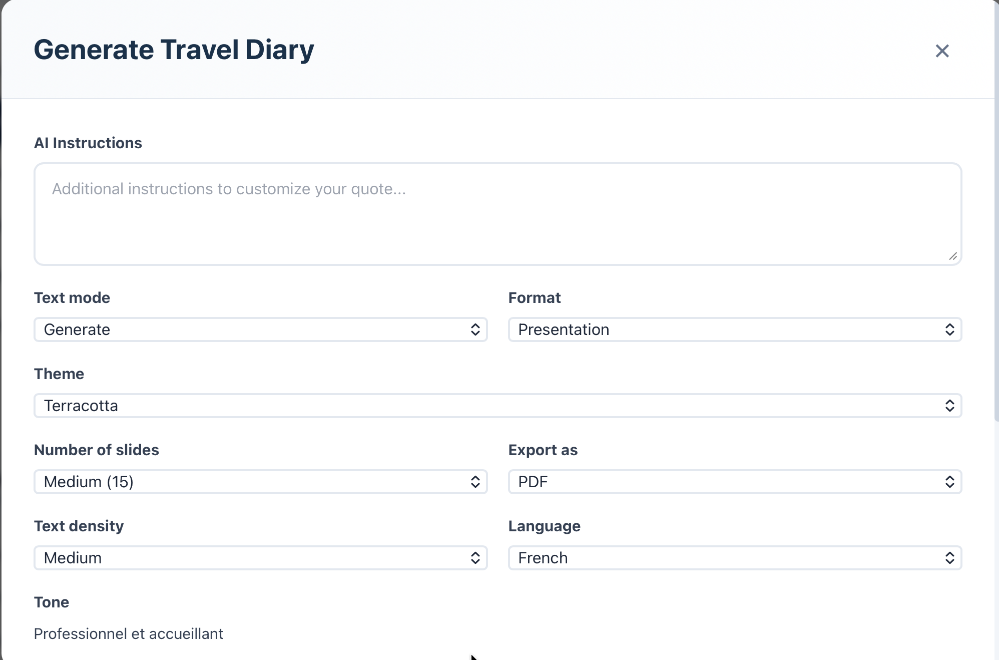
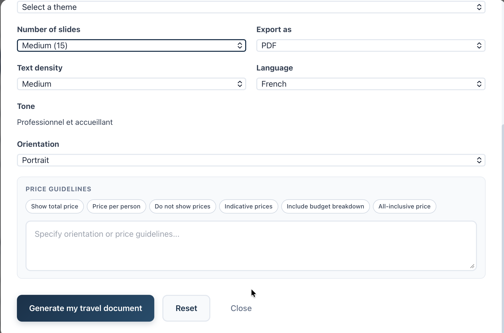

Se connecter
Accédez à votre espace personnel en toute sécurité.

Accédez à la page de connexion
Rendez-vous sur app.galdeo.com/login ou cliquez sur « Se connecter » dans le menu.
Entrez vos identifiants
Saisissez votre adresse e-mail et votre mot de passe, puis cliquez sur « Connexion ».
Mot de passe oublié ?
Cliquez sur « Mot de passe oublié » et suivez les instructions envoyées par e-mail pour réinitialiser votre accès.
Sécurité : Ne partagez jamais vos identifiants de connexion. Activez l'authentification à deux facteurs dans vos paramètres de sécurité pour protéger votre compte.
Tableau de bord
Naviguez dans votre espace de travail et comprenez chaque élément.

Le tableau de bord est votre point de départ. Voici les éléments principaux que vous verrez :
Menu de navigation
Barre latérale gauche pour accéder à vos projets, équipes et paramètres rapidement.
Résumé des activités
Aperçu des dernières actions, tâches en cours et statistiques clés de votre organisation.
Étape 2 Personnalise mon devis
Personnalisez votre espace pour que votre devis fait votre identité
Personnaliser mon devis
Cliquez sur « Personnaliser mon devis ». Accédez aux différentes sections de configuration :

Informations personnelles
Configurez les informations qui apparaîtront sur vos devis clients.

Identité de l'entreprise
Personnalisez vos devis et documents à l'image de votre entreprise (logo, couleurs, etc.).

Informations légales
Renseignez les mentions obligatoires (nom de l'entreprise, etc.).

Termes et conditions
Définissez les conditions générales qui seront affichées sur vos devis clients.

Conseil : Un profil complet renforce la confiance de vos clients lors de l'envoi de devis.
Étape 3 Créer un devis voyage
Générez un devis professionnel en quelques étapes simples.
Accéder à la création du devis
Cliquez sur « Générer un devis »
ou
Depuis le tableau de bord, cliquez sur « + Nouveau devis » en haut à droite.


Renseignez les informations
Renseignez les informations nécessaires du client (nom, email, langue, description)
Deux possibilités de création de devis
2a. Texte libre
Rédigez votre devis manuellement en ajoutant un maximum de détails (prestations, descriptions, conditions). Plus le contenu est précis, plus le devis sera clair et professionnel pour le client.
2b. Import de PDF
Importez directement un devis existant au format PDF pour le réutiliser ou l'adapter rapidement.


Options avancées
Personnalisez votre devis en ajustant les paramètres avancés :
- Thème de prestation : Choisissez le style ou l'ambiance du devis (luxe, aventure, détente, famille, etc.) pour adapter le contenu au type de voyage proposé.
- Longueur du format d'export : Définissez la longueur du devis (court, standard ou détaillé) selon le niveau d'information souhaité.
- Ton du texte : Sélectionnez le ton rédactionnel (professionnel, chaleureux, commercial, etc.) pour correspondre à votre image de marque.
- Densité du texte : Ajustez le niveau de détail du contenu (synthétique ou très détaillé).
- Instructions supplémentaires : Ajoutez des consignes spécifiques pour personnaliser davantage le rendu du devis (ex : mettre en avant certaines prestations, insister sur un point particulier, etc.).

Générer le devis
Cliquez sur « Générer un devis » pour finaliser la création.
Étape 4 Modifier votre devis
Ajustez, corrigez et mettez à jour votre devis à tout moment selon les besoins du client.
Accéder à vos devis
Ajustez, corrigez et mettez à jour votre devis à tout moment selon les besoins du client.

Ouvrir le devis existant
Accédez à la liste de vos devis, puis cliquez sur celui que vous souhaitez modifier pour l'ouvrir.

Modifier les prestations
Ajoutez, supprimez ou réorganisez les prestations incluses dans le devis afin de l'adapter aux retours du client.

Timeline & Sliders
Timeline
Permet d'organiser le déroulé du voyage dans le temps (jours, étapes, activités) afin de donner une vision claire et structurée.

Sliders
Ajoutez des carrousels d'images pour illustrer les prestations (hébergement, activités, destinations) et rendre le devis plus visuel et attractif.

Tarification
Modifiez les prix, ajustez les marges ou mettez à jour les montants selon les changements effectués sur les prestations.

Catalogue
Retrouvez le résumé des prestations de votre devis : hébergement, activités et transport.

Documents
Joignez ou modifiez les documents associés au devis (programmes, descriptifs, doc identité, doc de voyage, pièces justificatives, etc.).

Envoyer un devis
Exportez et partagez votre devis avec vos clients.
Envoyer un devis
Exporter vos modifications
Personnalisez la présentation de votre devis en fonction de vos besoins :
- Mini site : transforme votre devis en page interactive consultable en ligne.
- PDF : génère une version téléchargeable, consultable et partageable du devis.
- PowerPoint : génère une version encore plus modifiable si besoin.

Mini site
Le mini site est une page web interactive et élégante générée automatiquement à partir de votre devis Galdeo. Elle se présente comme un véritable carnet de voyage premium, partageable directement avec votre client via un lien personnalisé sur votre sous-domaine agence.
- 1 Profil agence — Section présentant l'agent et le voyage proposé : nom du conseiller, grille récapitulative (destination, dates, durée, voyageurs, hébergements) et deux boutons d'action — Appeler l'agence et Envoyer un email. Une photo de la destination avec la fiche de contact de l'agent s'affiche à droite.
- 2 Le voyage en chiffres — Quatre cartes récapitulatives mettent en valeur les chiffres clés du séjour : nombre de jours (avec les dates), nombre de voyageurs, nombre d'expériences sélectionnées et nombre d'hébergements. Chaque carte affiche aussi une courte description sous le chiffre.
- 3 Ce que représente votre voyage — Bandeau récapitulatif sur fond doré présentant l'ensemble des métriques du voyage : nombre de jours, villes visitées, hôtels, activités, voyageurs et étapes au total. Une synthèse visuelle percutante pour le client.
- 4 Carte & étapes — Vue d'ensemble de l'itinéraire illustrée par une grande photo de la destination principale avec un encart indiquant le nom de la ville, le nombre d'étapes et la durée. Des pastilles numérotées en bas de la carte permettent de naviguer entre les étapes (ex : 1 Nice · 2 Monaco).
- 5 Programme jour par jour — Liste accordéon de chaque journée, cliquable pour afficher le détail. Chaque jour affiché révèle : une photo du lieu, le nom et l'adresse de l'hôtel (tag Hébergement) et les activités prévues (tag Activité). La date complète est affichée en haut à droite de chaque ligne.
- 6 Fiche hébergement — À l'intérieur de chaque journée, la fiche hôtel s'affiche avec une grande photo du lieu, le nom de l'établissement, son adresse complète et sa note. Le tag Hébergement permet de distinguer visuellement l'hôtel des activités dans le programme.
- 7 Hébergements sélectionnés — Section dédiée listant tous les hôtels du séjour avec leurs photos et adresses. Chaque carte hôtel est présentée avec une image immersive, le nom de l'établissement, sa localisation exacte et ses étoiles. Le client peut visualiser d'un coup d'œil l'ensemble des lieux d'hébergement.
- 8 Budget du voyage — Visualisation financière du séjour sous forme de graphique circulaire doré indiquant le montant total TTC. Une barre de progression et un tableau de répartition détaillent chaque poste de coût. Cette transparence financière rassure et valorise l'offre auprès du client.
- 9 Contact conseiller — Page de contact finale sur fond sombre élégant, affichant le nom du conseiller dédié avec ses coordonnées directes : numéro de téléphone et adresse e-mail. Un design épuré qui invite le client à prendre contact facilement en fin de consultation du mini site.
PDF / PowerPoint
Configurer la génération du document de voyage
En cliquant sur Regenerate PDF, une modale s'ouvre avec de nombreuses options pour personnaliser le document généré :
- AI Instructions : ajoutez des consignes libres pour affiner la génération du contenu par l'IA.
- Text mode : choisissez entre Regenerate (texte généré par l'IA) ou un autre mode disponible.
- Format : sélectionnez le format de présentation (Presentation, etc.).
- Theme : choisissez le thème visuel du document (ex : Terracotta).
- Number of slides : définissez le volume du document (Short, Medium 15, Long…).
- Export as : format de sortie — PDF ou PowerPoint.
- Text density / Language / Tone / Orientation : affinez la densité du texte, la langue, le ton rédactionnel et l'orientation de la page.
- Price Guidelines : choisissez comment afficher les prix (prix total, par personne, indicatif, détail budget, tout inclus…).
Cliquez sur Regenerate my travel document pour lancer la génération, Reset pour réinitialiser les options, ou Close pour annuler.


Étape 5 Importer vos images
Gérez la galerie d'images de vos devis voyage.
Accéder aux images
Chaque image importée depuis une timeline sera automatiquement enregistrée ici.

Importer des images
Sélectionnez une catégorie et un titre pour chaque image importée.

Étape 6 Fournisseurs
Gérez vos fournisseurs et centralisez vos données partenaires.
Accéder aux fournisseurs
Cliquez sur « Fournisseurs » : un tableau listant tous vos fournisseurs s'affiche.

Créer un fournisseur
Une fiche fournisseur est associée à chaque produit.
2a. Ajouter la fiche fournisseur
Renseignez les contacts du fournisseur (nom, email, téléphone, etc.).
2b. Ajouter ses produits
Associez les produits du fournisseur pour les retrouver facilement dans vos devis.


Importer des fournisseurs
Importez plusieurs fiches en même temps pour gagner du temps et centraliser vos données.

Étape 7 Paramètres
Configurez et personnalisez votre compte Galdeo.
Accéder aux paramètres
Cliquez sur « Paramètres » pour accéder à toutes les options de configuration de votre compte.

Ressources
Accédez aux ressources et outils disponibles pour vous aider à utiliser Galdeo.

Referral (parrainage)
Partagez votre lien de parrainage pour inviter de nouveaux agents de voyage à rejoindre Galdeo et être enregistré comme parrain.

Mini-site agence
Configurez votre sous-domaine personnalisé afin de partager vos devis sous votre propre marque.